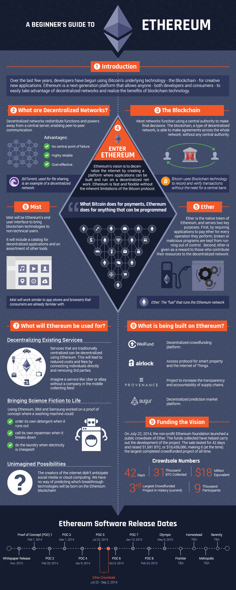

Introduction to Ethereum
In a technical sense, Ethereum is a "world computer".
Harking back to the days of the mainframe, and probably about as fast, Ethereum can be viewed as a single computer that the whole world can use.
It notionally has only a single processor (no multi-threading or parallel execution), but as much memory as required.
Anybody can upload programs to the Ethereum World Computer and anybody can request that a program that has been uploaded be executed.
This does not mean that anyone can ask any program to do anything; on the contrary: the author of the program can specify that requests from anyone but themselves be ignored, for example.
Also, in a very strong sense, every program has its own permanent storage that persists between executions.
Furthermore, as long as it is in demand, the Ethereum World Computer will always be there: it can't be shut down or turned off.
You may ask, "why would anyone use such a system?" and again there are many reasons.
The main reason is because it makes what you want to do cheaper and easier.
An Internet Service Platform
In a more practical sense, Ethereum is an internet service platform for guaranteed computation.
More than that, as a platform, it provides a set of integral features which are very useful to the developer:
- user authentication, via seamless integration of cryptographic signatures
- fully customizable payment logic; easily create your own payment system without any reliance on third parties
- 100% ddos resistant up-time, guaranteed by being a fully decentralized blockchain-based platform
- no-fuss storage: forget about having to set up secure databases; Ethereum gives you as much storage as you want
- ultimate interoperability: everything in the Ethereum ecosystem can trivially interact with everything else, from reputation to custom currencies
- server free zone: your whole application can be deployed on the blockchain meaning no need for setting up or maintaining servers; let your users pay for the cost of their using your service.
Over the last twenty years in particular, we have seen an acceleration in the development of services and infrastructure to make the overhead of working as a team or running businesses simpler and less expensive, mainly thanks to the internet.
The likes of eBay, Drivy and Airbnb have made setting up a shop, car rental company or hotel much easier.
These are platforms that allow people to realize their idea quickly, as long as the service they want to provide fits the template offered by the platform.
Outside Ethereum, it is very costly to create a new platform if those that already exist do not fit your needs.
Ethereum can be seen as a platform for platforms: it allows people to easily create the infrastructure to make it easy to set up new services on the internet.
Furthermore, any infrastructure created on Ethereum sits alongside everyone else's creations, and so can interact with those other platforms in a guaranteed and seamless manner.
Importantly, because there is not a company or indeed any entity in charge of or controlling Ethereum, the cost of running the infrastructure doesn't have to include any profit margin, so we are likely to see lower costs.
With the coming of the Mix IDE and the Mist browser, the functionality of Ethereum as a deployment platform for internet services will become more clear.
The take-home message from this is that Ethereum is poised to disrupt industries as diverse as finance and supply chains.
